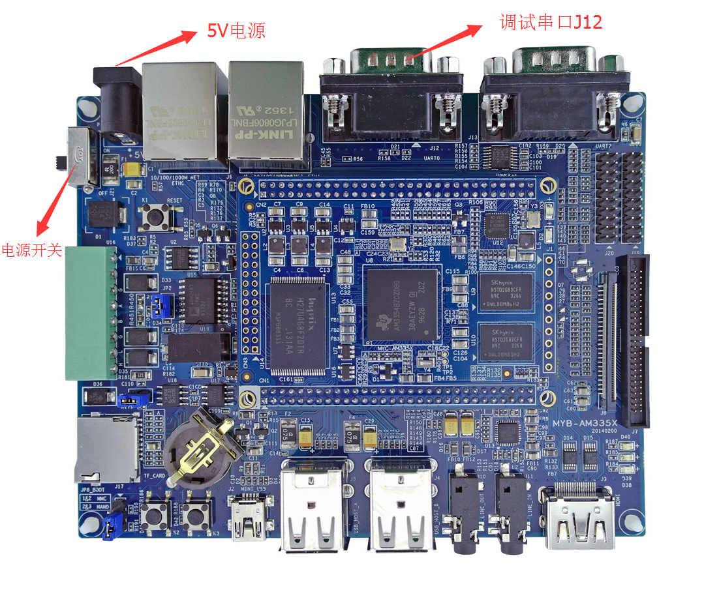
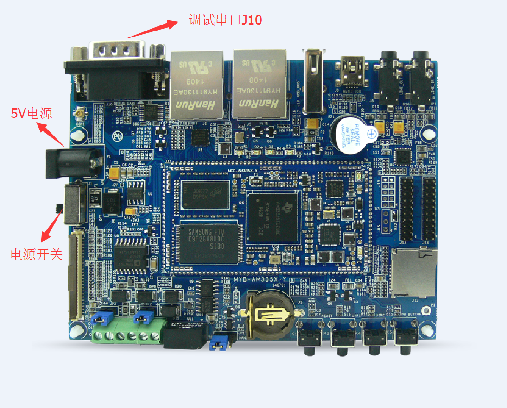
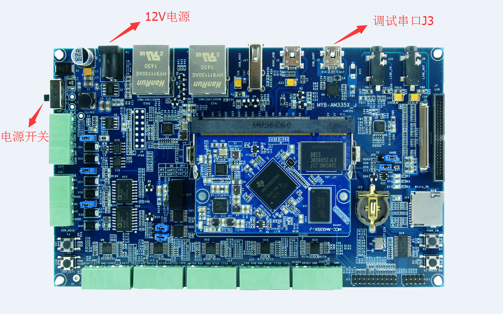

2. 部署开发环境
本小节主要介绍相关工具和环境，工具链的设置，开发环境验证。
pc开发环境：Ubuntu12.04/14.04/16.04 64位桌面版
交叉编译器：gcc5.3(Linaro GCC 2016.02)
硬件调试环境搭建
- MYD-AM335X硬件调试环境搭建：
把调试串口J12连到PC上并将PC串口的波特率设为115200，数据位为8，停止位为1，无奇偶校验。 具体如图2-1： 
图2-1 MYD-AM335X硬件调试接口
MYD-AM335X-Y硬件调试环境搭建：
把调试串口J10连到PC上并将PC串口的波特率设为115200，数据位为8，停止位为1，无奇偶校验。 具体如下2-2： 
图2-2 MYD-AM335X-Y硬件调试接口
MYD-AM335X-J硬件调试环境搭建：
把调试串口J3连到PC上并将PC串口的波特率设为115200，数据位为8，停止位为1，无奇偶校验。 具体如下图2-3： 
图2-3 MYD-AM335X-J硬件调试接口
建立工作目录:
创建工作目录, 并拷贝MYD AM335X系列开发板出厂附带资料04-Linux_Source目录到Linux开发主机中，具体目录用户可根据实际情况调整，后文不再赘述，如下所示：
$ mkdir -p <WORKDIR>
$ cp /media/cdrom/04-Linux_Source/* <WORKDIR> -rf
$ ls <WORKDIR>
Bootloader/ Examples/ Filesystem/ Kernel/ Patches/ ToolChain/